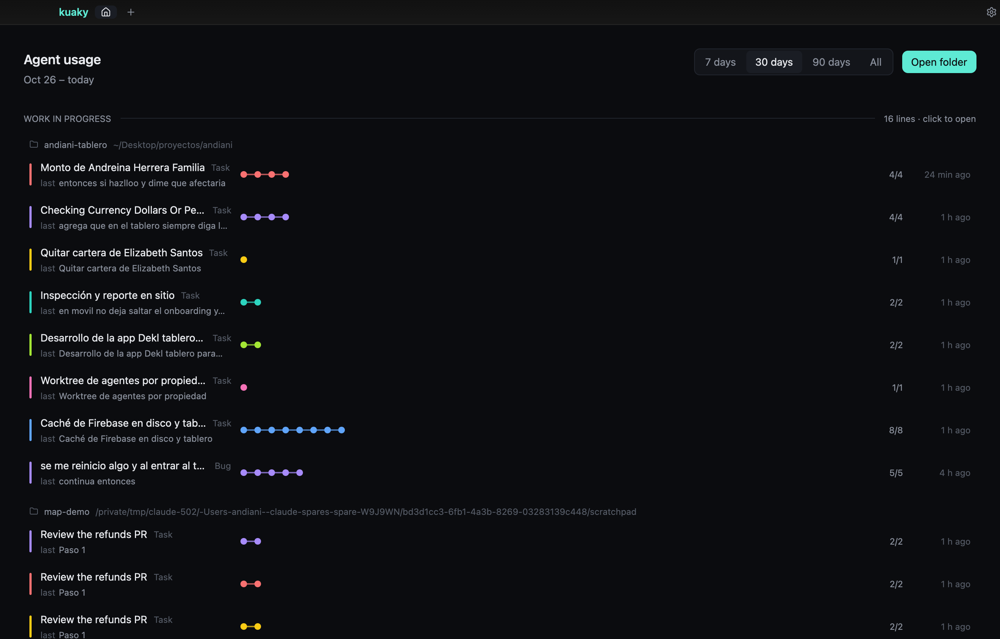
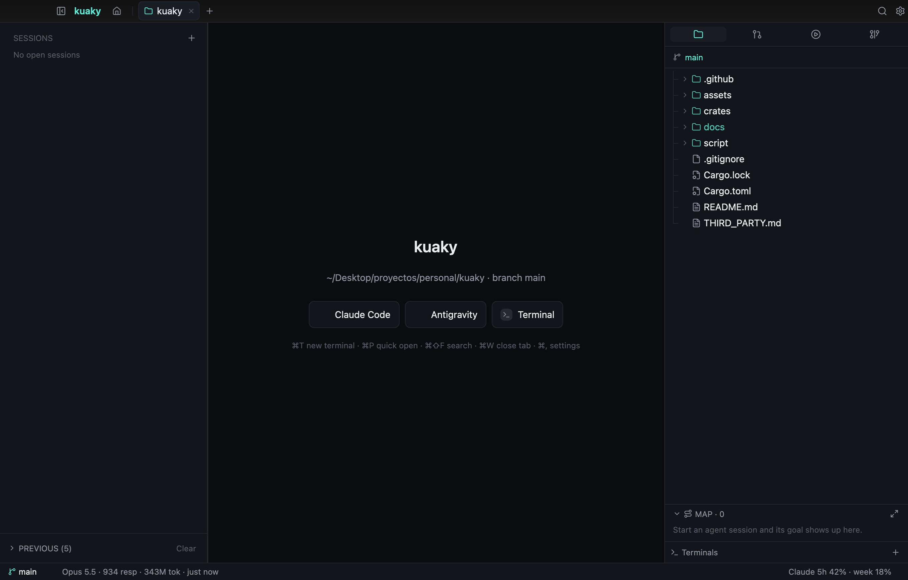
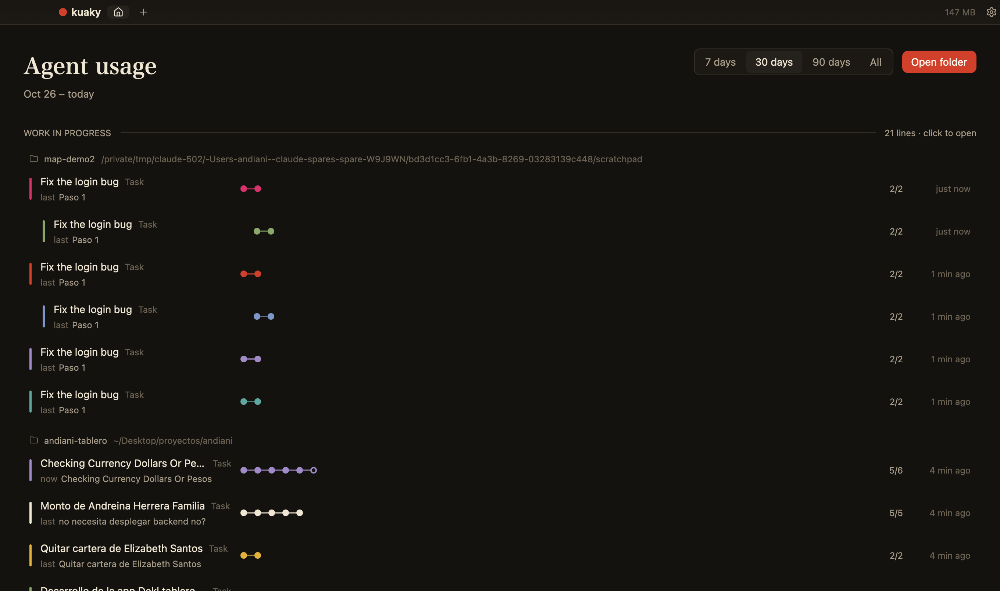
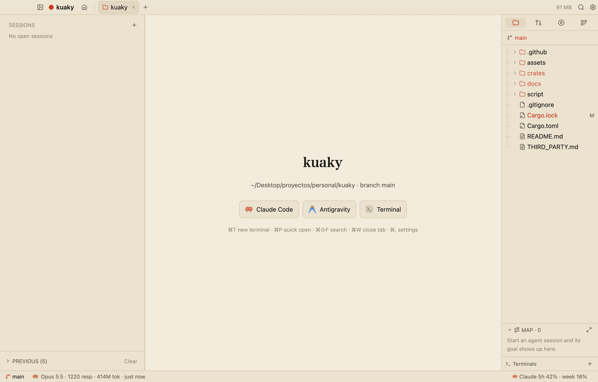

TOKENS / 30D
343M
COST
$2,647
Decisión (24/11/2026): se eligió la C · Sumi / Papel y ya está en la app con sus animaciones. Sumi es el tema oscuro y Papel el claro; por defecto kuaky sigue el modo del sistema. Kuaky Original sigue disponible en Settings → Appearance. A y B se quedan aquí solo como registro.
Tres direcciones basadas en tus referencias. El diseño actual quedó guardado como el tema Kuaky Original y en la etiqueta de git diseno-original-v0. Los cinco temas ya funcionan en la app (Settings → Appearance). Las maquetas de abajo muestran además la estructura y la tipografía, que todavía no están en el código.


Es la línea visual de tu portafolio (su DESIGN.md: "workstation editorial") llevada a kuaky. Cada bloque de información es una etiqueta: marco de 1 px, una letra grande como índice, campos en mono mayúsculas y el valor grande al lado. Secciones con eyebrow numerada // 01 y una tira de metadatos al estilo TP-7 en la barra de estado. Un solo naranja #ff6a1a con la regla 60-30-10. Azul acero para la salida de tokens. Tiene par claro (papel #f4f2ed) para el modo System.
// 01 — TÍTULO en mono y una línea punteada.[A1] en filas de sesiones y líneas. Rayas amarillas y negras de "precaución" para needs you.La pantalla es una rejilla. Cada panel es una celda con línea de 1 px y una escuadra en la esquina, los números van en monoespaciada grande, las alertas son bloques naranjas sólidos, el consumo se muestra con un medidor circular y las celdas vacías con una X. Es la más llamativa, pero también la más cansada para usar 8 horas.
Cálida y editorial: tinta sumi y papel washi, un sol bermellón como marca, títulos en serif (Hiragino Mincho, incluida en macOS), una etiqueta vertical por sección y un sello para lo que necesita tu atención. Es la única que tiene par claro/oscuro natural, para el modo System.


danger es carmín/beni y siempre va con icono.Corregidas con tus guías: las reglas de animación de tu DESIGN.md (§6) y la guía de movimiento de la skill hyperframes. Dos cambios frente a la primera versión: quité el pulso en bucle de la línea del metro y que todo entre con fundido y subiendo, porque son justo lo que hace que una interfaz parezca genérica.
| # | Dónde | Qué | Curva · duración |
|---|---|---|---|
| 1 | Cambiar Home ↔ proyecto | Fundido sin desplazamiento: sale en 90 ms, entra en 160 ms | salida / out-expo |
| 2 | Filas de sesiones y líneas al cargar | El texto pasa de gris a tinta, fila por fila, 50 ms entre filas (máx. 8). Sin moverse | out-expo · 200 ms |
| 3 | Números de Home al cambiar de rango | Los dígitos ruedan como un contador mecánico (tabulares, ancho fijo) | out-expo · 320 ms |
| 4 | Línea del metro con agente trabajando | Un segmento recorre el último tramo a velocidad constante, como una barra de progreso. Sin pulsos | lineal · 1.2 s, repite |
| 5 | Needs you | Las rayas de precaución entran una vez deslizándose y se quedan quietas | out-expo · 240 ms |
| 6 | Settings y menús | Entran con opacidad y escala de 98 % a 100 %; salen solo con opacidad, más rápido | out-expo 160 ms / salida 90 ms |
| 7 | Indicador de pestaña y del rango de días | Se desliza a la nueva opción con resorte amortiguado (0.85, sin rebote visible) | resorte · ~240 ms |
| 8 | Barras de límite (5 h / semana) | Se llenan desde 0 la primera vez que se abre Home | out-expo · 320 ms |
design-whimsy-injector, pero choca con tu estilo sin sombras)."Reducir movimiento" de macOS ya lo respeta with_animation de GPUI: todo se muestra quieto sin código extra. Remotion y HyperFrames son para videos, no para la app. Sirven si luego quieres un video de demo de kuaky (mejor HyperFrames, por licencia).
A · Etiqueta (oscuro) + Etiqueta Claro. Es tu propia línea visual, así que kuaky queda en familia con tu portafolio. Conserva la lectura cómoda de un editor y le da identidad (marcos, índices, eyebrows numeradas, un solo naranja), lejos del look genérico. Rejilla, Sumi y Papel quedan como temas alternos porque ya funcionan. Las animaciones 1, 2, 6 y 7 son las de más impacto con menos código.
Las tres direcciones se pueden mezclar: por ejemplo, la estructura de Etiqueta con la paleta de Sumi. Dime cuál eliges (o qué mezcla) y en la siguiente fase meto radios, tipografía, componentes de etiqueta y animaciones.